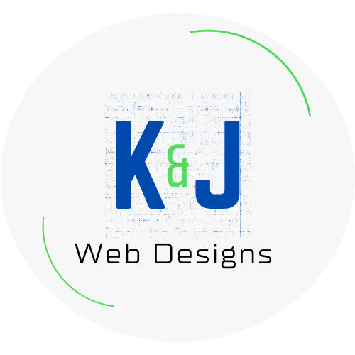
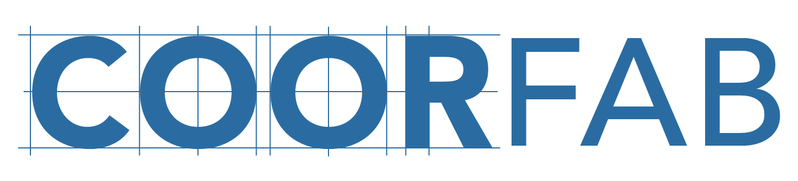

Projects & Experience

K & J Web Designs — Operations & Marketing Co-op
Jan 2025 – Aug 2025 · Cincinnati, OH
- Designed and implemented social media strategies; increased target audience engagement by 50%.
- Managed projects and client communication using Trello and Honeybook CRM.

CoorFab Services — Marketing Co-op
Sep 2024 – Aug 2025 · Cincinnati, OH
- Created and managed content for newsletters, websites, and social; increased outreach by 80%.
- Optimized campaigns with Squarespace SEO/analytics and HubSpot; supported AEC research and abstracts.
Northwestern Mutual — Financial Planning Intern
May 2024 – Aug 2024 · Cincinnati, OH
- Supported advisors with case prep, follow-up, and CRM updates to maintain current financial plans.
- Helped develop plans across retirement, risk management, and investment strategies.
Selected Academic Project
ComPASS App Design
Led a 5-member team to prototype a study-aid app that automates content creation and provides tailored recommendations. Delivered use-case, activity, BPMN, and class diagrams plus a clickable interface.